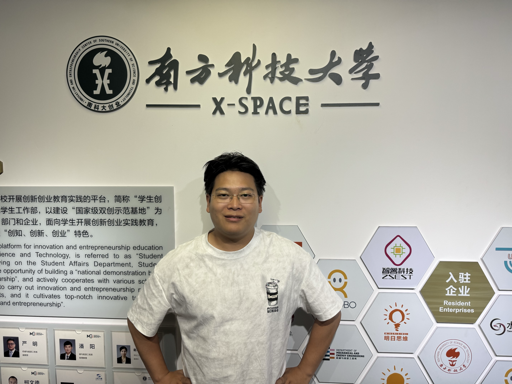
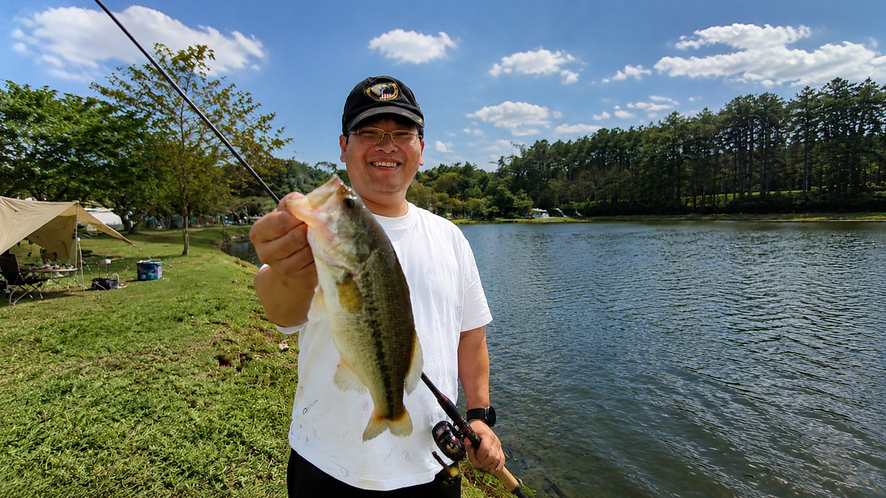

- Name
- Chester
- Hometown
- Shenzhen
- Occupation
- Kastave COO
- Favourite Method / Rig
- Lure Search Fishing; Texas Rig Fishing; Bottom Fishing
- Favorite fish species
- Largemouth Bass; Carp
Chester is passionate about fishing and understands what anglers actually face on the bank: finding fish, choosing spots, and making better decisions with limited time. His experience gives Kastave a practical standard for what field-ready scouting should feel like.
When William came to him for fishing advice, they started asking whether technology could help anglers find fish faster and more confidently. Chester helps keep the product grounded in real fishing behavior, real water and real user decisions.

